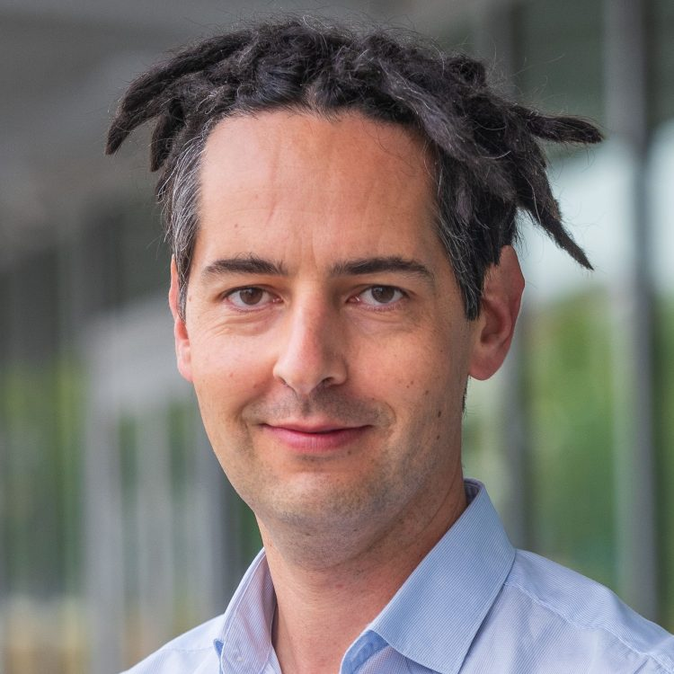
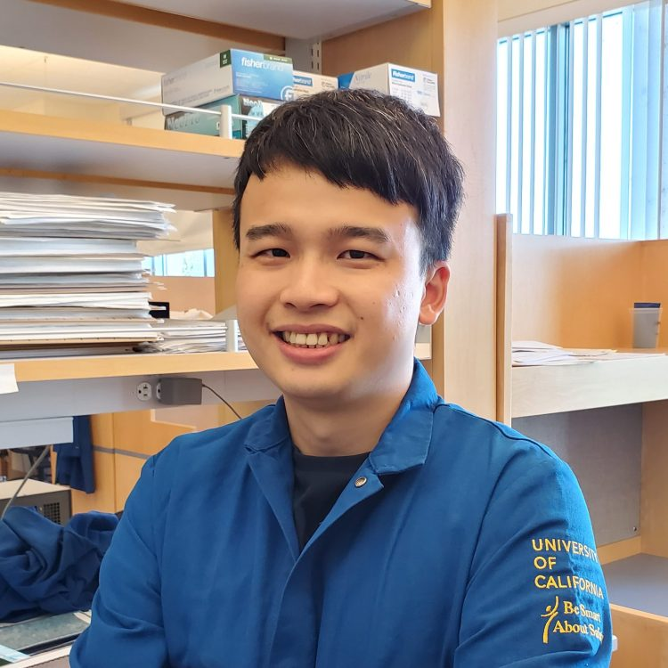
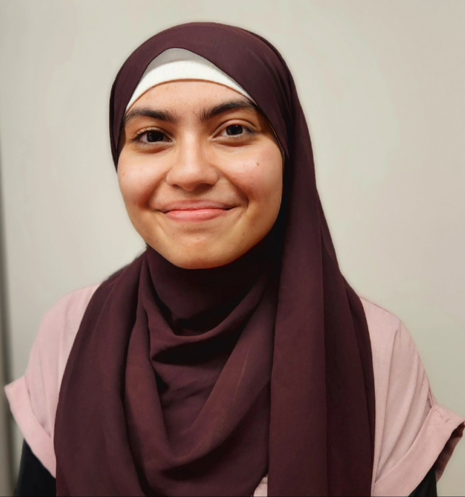
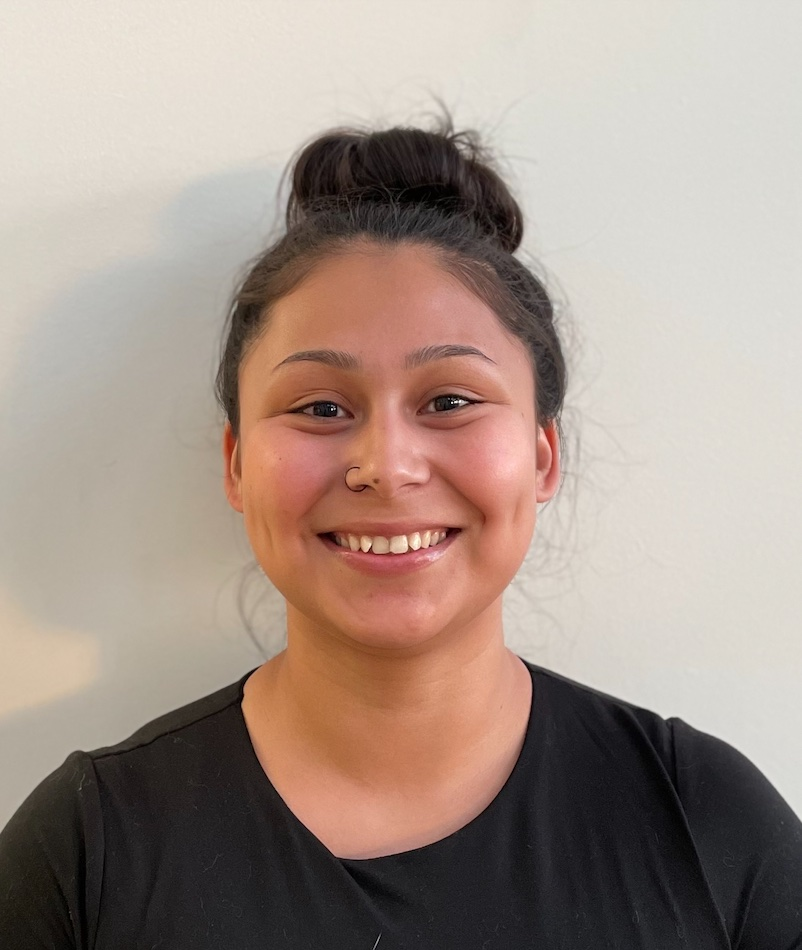
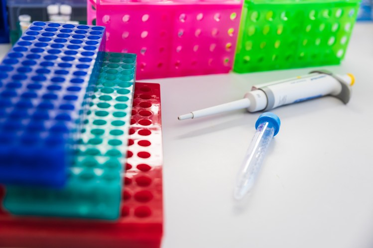

Stefan Materna
Principal Investigator
Developmental & Systems Biology

Principal Investigator

Graduate Researcher

Graduate Researcher

Graduate Researcher

Undergraduate Researcher
We are always looking for people that are excited to join the lab.
If you are interested in joining the lab as a graduate researcher, please reach out to Stefan to discuss options. Committing to a lab for a Ph.D. is an important decision and the sooner we get the conversation started the better. Our lab is part of the Quantitative and Systems Biology graduate program to which you must apply. Please check the QSB website for details on the application process.
We are happy to have undergraduate researchers join the lab to conduct original research. If you are interested, please email Stefan and include a brief statement with what attracts you to the research we do, what you hope to learn, and what you may contribute to the lab. We will consider undergraduate students at every stage. However, you should have completed, or be enrolled in, Bio110.
If you are interested in joining as a postdoctoral researcher, please email Stefan with a CV, a summary of your research interests, and a brief statement of why you are interested in joining the lab. We are looking forward to hearing from you!